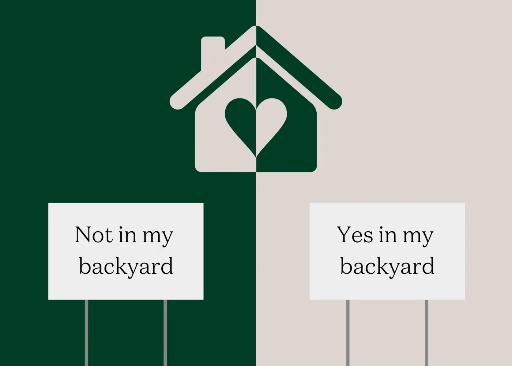
Mini-Project 02 - Making Backyards Affordable for All
Introduction
The purpose of this project is to strengthen data analysis, critical thinking, and written communication skills. Through applying the knowledge on R and analytics gained through this course, this report will result in a mock-policy brief to illustrate the impact of the YIMBY (“yes in my backyard”) movement based on real-world data.
This report expands upon the techniques used in Mini-Project 1, including the use of more advanced data manipulation, creating visualizations to help tell the data story, and synthesizing complex information into a clear output, suitable for audiences of a variety of technical backgrounds.
NIMBY vs YIMBY Movements
This project refers to various industry and policy specific terms. The defiitions below provide context around the definitions of different terms and acronyms used throughout this report.
Sources: Britannica; Cambridge Dictionary; US Census Bureau; US Bureau of Economic Analysis; Investopedia; Neighborhood Data for Social Change
Data Import
This project utilizes available data from the US Census Bureau’s American Community Survey (ACS), as well as the Bureau of Labor Statistics. These sources provide population, housing, and labor data from official government sources. While these sources come with some limitations, such as potential missing populations or underrepresented groups, the Census and BLS have high quality, comprehensive national data. These sources also provide well-documented and relevant data that adds credibility for the project premise of gaining policymaker support.


Show US Census Bureau Import Code
if(!dir.exists(file.path("data", "mp02"))){
dir.create(file.path("data", "mp02"), showWarnings=FALSE, recursive=TRUE)
}
ensure_package <- function(pkg){
pkg <- as.character(substitute(pkg))
options(repos = c(CRAN = "https://cloud.r-project.org"))
if(!require(pkg, character.only=TRUE, quietly=TRUE)) install.packages(pkg)
stopifnot(require(pkg, character.only=TRUE, quietly=TRUE))
}
ensure_package(tidyverse)
ensure_package(glue)
ensure_package(readxl)
ensure_package(tidycensus)
get_acs_all_years <- function(variable, geography="cbsa",
start_year=2009, end_year=2023){
fname <- glue("{variable}_{geography}_{start_year}_{end_year}.csv")
fname <- file.path("data", "mp02", fname)
if(!file.exists(fname)){
YEARS <- seq(start_year, end_year)
YEARS <- YEARS[YEARS != 2020] # Drop 2020 - No survey (covid)
ALL_DATA <- map(YEARS, function(yy){
tidycensus::get_acs(geography, variable, year=yy, survey="acs1") |>
mutate(year=yy) |>
select(-moe, -variable) |>
rename(!!variable := estimate)
}) |> bind_rows()
write_csv(ALL_DATA, fname)
}
read_csv(fname, show_col_types=FALSE)
}
# Household income (12 month)
INCOME <- get_acs_all_years("B19013_001") |>
rename(household_income = B19013_001)
# Monthly rent
RENT <- get_acs_all_years("B25064_001") |>
rename(monthly_rent = B25064_001)
# Total population
POPULATION <- get_acs_all_years("B01003_001") |>
rename(population = B01003_001)
# Total number of households
HOUSEHOLDS <- get_acs_all_years("B11001_001") |>
rename(households = B11001_001)Show Census New Housing Units Import Code
get_building_permits <- function(start_year = 2009, end_year = 2023){
fname <- glue("housing_units_{start_year}_{end_year}.csv")
fname <- file.path("data", "mp02", fname)
if(!file.exists(fname)){
HISTORICAL_YEARS <- seq(start_year, 2018)
HISTORICAL_DATA <- map(HISTORICAL_YEARS, function(yy){
historical_url <- glue("https://www.census.gov/construction/bps/txt/tb3u{yy}.txt")
LINES <- readLines(historical_url)[-c(1:11)]
CBSA_LINES <- str_detect(LINES, "^[[:digit:]]")
CBSA <- as.integer(str_sub(LINES[CBSA_LINES], 5, 10))
PERMIT_LINES <- str_detect(str_sub(LINES, 48, 53), "[[:digit:]]")
PERMITS <- as.integer(str_sub(LINES[PERMIT_LINES], 48, 53))
data_frame(CBSA = CBSA,
new_housing_units_permitted = PERMITS,
year = yy)
}) |> bind_rows()
CURRENT_YEARS <- seq(2019, end_year)
CURRENT_DATA <- map(CURRENT_YEARS, function(yy){
current_url <- glue("https://www.census.gov/construction/bps/xls/msaannual_{yy}99.xls")
temp <- tempfile()
download.file(current_url, destfile = temp, mode="wb")
fallback <- function(.f1, .f2){
function(...){
tryCatch(.f1(...),
error=function(e) .f2(...))
}
}
reader <- fallback(read_xlsx, read_xls)
reader(temp, skip=5) |>
na.omit() |>
select(CBSA, Total) |>
mutate(year = yy) |>
rename(new_housing_units_permitted = Total)
}) |> bind_rows()
ALL_DATA <- rbind(HISTORICAL_DATA, CURRENT_DATA)
write_csv(ALL_DATA, fname)
}
read_csv(fname, show_col_types=FALSE)
}
PERMITS <- get_building_permits()Show Bureau of Labor Statistics Import Code - NAICS Coding System
ensure_package(httr2)
ensure_package(rvest)
get_bls_industry_codes <- function(){
fname <- fname <- file.path("data", "mp02", "bls_industry_codes.csv")
if(!file.exists(fname)){
resp <- request("https://www.bls.gov") |>
req_url_path("cew", "classifications", "industry", "industry-titles.htm") |>
req_headers(`User-Agent` = "Mozilla/5.0 (Macintosh; Intel Mac OS X 10.15; rv:143.0) Gecko/20100101 Firefox/143.0") |>
req_error(is_error = \(resp) FALSE) |>
req_perform()
resp_check_status(resp)
naics_table <- resp_body_html(resp) |>
html_element("#naics_titles") |>
html_table() |>
mutate(title = str_trim(str_remove(str_remove(`Industry Title`, Code), "NAICS"))) |>
select(-`Industry Title`) |>
mutate(depth = if_else(nchar(Code) <= 5, nchar(Code) - 1, NA)) |>
filter(!is.na(depth))
naics_table <- naics_table |>
filter(depth == 4) |>
rename(level4_title=title) |>
mutate(level1_code = str_sub(Code, end=2),
level2_code = str_sub(Code, end=3),
level3_code = str_sub(Code, end=4)) |>
left_join(naics_table, join_by(level1_code == Code)) |>
rename(level1_title=title) |>
left_join(naics_table, join_by(level2_code == Code)) |>
rename(level2_title=title) |>
left_join(naics_table, join_by(level3_code == Code)) |>
rename(level3_title=title) |>
select(-starts_with("depth")) |>
rename(level4_code = Code) |>
select(level1_title, level2_title, level3_title, level4_title,
level1_code, level2_code, level3_code, level4_code)
write_csv(naics_table, fname)
}
read_csv(fname, show_col_types=FALSE)
}
INDUSTRY_CODES <- get_bls_industry_codes()Show BLS Quarterly Census of Employment and Wages Import Code
ensure_package(httr2)
ensure_package(rvest)
get_bls_qcew_annual_averages <- function(start_year=2009, end_year=2023){
fname <- glue("bls_qcew_{start_year}_{end_year}.csv.gz")
fname <- file.path("data", "mp02", fname)
YEARS <- seq(start_year, end_year)
YEARS <- YEARS[YEARS != 2020] # Drop Covid year to match ACS
if(!file.exists(fname)){
ALL_DATA <- map(YEARS, .progress=TRUE, possibly(function(yy){
fname_inner <- file.path("data", "mp02", glue("{yy}_qcew_annual_singlefile.zip"))
# Check if file exists and if it's corrupted - if so, delete it
if(file.exists(fname_inner)){
if(file.info(fname_inner)$size < 755e5){
message("Deleting corrupted file for year ", yy)
file.remove(fname_inner)
}
}
# Download if file doesn't exist (or was just deleted)
if(!file.exists(fname_inner)){
message("Downloading data for year ", yy)
request("https://www.bls.gov") |>
req_url_path("cew", "data", "files", yy, "csv",
glue("{yy}_annual_singlefile.zip")) |>
req_headers(`User-Agent` = "Mozilla/5.0 (Macintosh; Intel Mac OS X 10.15; rv:143.0) Gecko/20100101 Firefox/143.0") |>
req_retry(max_tries=5) |>
req_perform(fname_inner)
}
# Final check after download
if(file.info(fname_inner)$size < 755e5){
stop("Download failed for year ", yy, ". File appears corrupted. Please check your internet connection and try again.")
}
# Read and process the data
read_csv(fname_inner,
show_col_types=FALSE) |>
mutate(YEAR = yy) |>
select(area_fips,
industry_code,
annual_avg_emplvl,
total_annual_wages,
YEAR) |>
filter(nchar(industry_code) <= 5,
str_starts(area_fips, "C")) |>
filter(str_detect(industry_code, "-", negate=TRUE)) |>
mutate(FIPS = area_fips,
INDUSTRY = as.integer(industry_code),
EMPLOYMENT = as.integer(annual_avg_emplvl),
TOTAL_WAGES = total_annual_wages) |>
select(-area_fips,
-industry_code,
-annual_avg_emplvl,
-total_annual_wages) |>
# 10 is a special value: "all industries" , so omit
filter(INDUSTRY != 10) |>
mutate(AVG_WAGE = TOTAL_WAGES / EMPLOYMENT)
}, otherwise = NULL)) |>
bind_rows()
# Check if any years failed to download
ALL_DATA_YEARS <- unique(ALL_DATA$YEAR)
YEARS_DIFF <- setdiff(YEARS, ALL_DATA_YEARS)
if(length(YEARS_DIFF) > 0){
stop("Download failed for the following years: ", paste(YEARS_DIFF, collapse=", "),
". Please check your internet connection and try running again.")
}
write_csv(ALL_DATA, fname)
}
# Read the combined data file
read_csv(fname, show_col_types=FALSE)
}
WAGES <- get_bls_qcew_annual_averages()Data Relationship Diagram
The below diagram shows the data tables used for analysis in this project and their relationships to each other. The visualization illustrates how the tables are connected and possible join structures.

Key Join Considerations
- ACS Tables (INCOME, RENT, POPULATION, HOUSEHOLDS): These tables can be joined using
GEOID,NAME, andyear. Each of these tables has the same structure. - PERMITS to ACS:
CBSAmust be converted to matchGEOIDformat (requires a conversion to character format) - WAGES to PERMITS:
FIPSrequires special formatting usingstr_sub(FIPS, 2, 6)to matchCBSA - WAGES to INDUSTRY_CODES:
INDUSTRY(integer) joins tolevel4_code
Initial Analyses
Multi-Table Questions
The below data tables illustrate initial exploratory analysis. These exercises were used to develop an in-depth understanding of the available data and begin recognizing trends.
T2-Q1: New Housing Units in the 2010s
The table below outlines the number of new housing units by CBSA in the decade from 2010 to 2019 (inclusive).
Show Table Code
# Find CBSA with most housing permits from 2010-2019
top_permits <- PERMITS |>
filter(year >= 2010, year <= 2019) |>
group_by(CBSA) |>
summarise(total_permits = sum(new_housing_units_permitted, na.rm = TRUE)) |>
left_join(INCOME |> select(GEOID, NAME) |> distinct(),
by = c("CBSA" = "GEOID")) |>
arrange(desc(total_permits)) |>
head(20) |>
mutate(Rank = row_number())
# Format the table
library(DT)
library(htmltools)
# Create title
title <- tags$h3("Top 20 Metropolitan Areas by Housing Permits (2010-2019)",
style = "text-align: center; margin-bottom: 10px;")
# Create table
table <- datatable(
top_permits |>
select(Rank, NAME, total_permits) |>
rename(
"Metropolitan Area" = NAME,
"Total Housing Permits (2010-2019)" = total_permits
),
options = list(
pageLength = 10,
searching = TRUE,
ordering = TRUE,
lengthChange = FALSE,
info = TRUE,
dom = 'ftp'
),
rownames = FALSE,
filter = 'top'
) |>
formatCurrency("Total Housing Permits (2010-2019)",
currency = "",
digits = 0)
# Display title and table together
browsable(tagList(title, table))Top 20 Metropolitan Areas by Housing Permits (2010-2019)
NoteKey Finding
Houston-Sugar Land-Baytown, TX Metro Area permitted the greatest number of new housing units in the US from 2010 to 2019, with 482,075 total permits issued during this period.
This suggests that these are markets with growing housing supply.
T2-Q2: Albuquerque New Housing Units
The table below outlines new housing units by year in Albuquerque, New Mexico (CBSA Number 10740).
Show Table Code
# Find year with most permits for Albuquerque (CBSA 10740)
albuquerque_permits <- PERMITS |>
filter(CBSA == "10740") |>
arrange(year) |> # Sort by year first to calculate percent change
mutate(
percent_change = (new_housing_units_permitted - lag(new_housing_units_permitted)) /
lag(new_housing_units_permitted) * 100
) |>
arrange(desc(new_housing_units_permitted)) |> # Now sort by permits
mutate(Rank = row_number())
# Format the table
library(DT)Albuquerque, NM Housing Permits by Year
NoteKey Finding
Albuquerque, NM (CBSA 10740) permitted the most new housing units in 2021, with 4,201 permits issued.
This was an increase of over 9,000% from the previous year, illustrating a strong resurgence in housing development after the initial lockdown period of the COVID-19 pandemic. While this significant increase was largely influenced by pent-up demand due to the pandemic, both 2021 and 2022 housing permits are still greater than 2020 and 2019 permits.
For example, in 2022 Albuqueque, NM permitted 2,852 new housing units, which is still a 32.7% increase from 2019 permits.
T2-Q3: Individual Income by State
Show Table Code
# Create state lookup dataframe
state_df <- data.frame(
abb = c(state.abb, "DC", "PR"),
name = c(state.name, "District of Columbia", "Puerto Rico")
)
# Calculate average individual income by state in 2015
state_income_2015 <- INCOME |>
filter(year == 2015) |>
mutate(state = str_extract(NAME, ", (.{2})", group = 1)) |>
left_join(HOUSEHOLDS, by = c("GEOID", "NAME", "year")) |>
left_join(POPULATION, by = c("GEOID", "NAME", "year")) |>
mutate(total_income = household_income * households) |>
group_by(state) |>
summarise(
total_state_income = sum(total_income, na.rm = TRUE),
total_state_population = sum(population, na.rm = TRUE)
) |>
mutate(avg_individual_income = total_state_income / total_state_population) |>
left_join(state_df, by = c("state" = "abb")) |>
arrange(desc(avg_individual_income)) |>
mutate(Rank = row_number()) |>
head(20) # Top 20 states
# Format the table
library(DT)Average Individual Income by State (2015)
NoteKey Finding
Washington, D.C. had the highest average individual income among all Census data entries in 2015, with an average of $33,233 per person across a population of 6,098,283 residents.
At an official state level, Massachusetts has the highest average individual income in 2015, wiht an average of $27,261 per person across a population of 6,754,601 residents.
ImportantCensus Data Classifications
While Washington, D.C. is not an official United States, but rather a federal district, it is considered a county or state-equivalent in the US Census for data purposes, putting it in equal comparison to the other 50 states.
Related: District of Columbia Census Profile
T2-Q4: Data Scientists & Business Analysts in New York City
The table below displays which metros had the greatest number of data scientists and business analysts in the US each year. Using the Census and BLS data, this table utilizes CBSA to measure geographic area, and NAICS code for labor industry.
Show Table Code
library(DT)
# Create standardized CBSA lookup
census_cbsa <- INCOME |>
select(GEOID, NAME) |>
distinct() |>
mutate(std_cbsa = paste0("C", GEOID))
# Get all data with rankings
all_data <- WAGES |>
filter(INDUSTRY == 51821) |>
mutate(std_cbsa = paste0(FIPS, "0")) |>
inner_join(census_cbsa, by = "std_cbsa") |>
group_by(YEAR) |>
mutate(national_rank = rank(desc(EMPLOYMENT), ties.method = "first")) |>
ungroup()
# Table 1: Leading CBSA each year with "years since last led" column
leading_cbsa_by_year <- all_data |>
filter(national_rank == 1) |>
arrange(desc(YEAR)) |> # Sort by year descending (most recent first)
group_by(NAME) |>
mutate(last_year_led = max(YEAR)) |> # Find most recent year each metro led
ungroup() |>
mutate(years_since_led = max(YEAR) - last_year_led) |> # Calculate years ago
select(YEAR, NAME, EMPLOYMENT, last_year_led, years_since_led)
# Table 2: NYC rankings
nyc_rankings <- all_data |>
filter(std_cbsa == "C356200") |>
arrange(YEAR) |>
select(YEAR, EMPLOYMENT, national_rank)
# Find last year NYC was #1
last_year_number_one <- nyc_rankings |>
filter(national_rank == 1) |>
slice_max(YEAR, n = 1)Leading CBSA in Data Scientists & Business Analysts by Year
Despite some missing data from several years for this criteria (2011, 2017, 2019), these patterns remain consistent for the available data. In addition, 2020 was excluded from this dataset due to the COVID-19 pandemic’s impact on the workforce.
The graph below represents changes in the data science workforce in New York versus San Francisco from 2009 to 2023.
Show Graph Code
library(ggplot2)
# Get data for NYC and San Francisco using name matching
metro_comparison <- all_data |>
filter(str_detect(NAME, "New York-Newark-Jersey City|San Francisco-Oakland-Fremont")) |>
mutate(metro_name = case_when(
str_detect(NAME, "New York") ~ "New York",
str_detect(NAME, "San Francisco") ~ "San Francisco",
TRUE ~ NAME
)) |>
select(YEAR, metro_name, EMPLOYMENT) |>
rename(NAME = metro_name)
# Calculate national average by year
national_average <- all_data |>
group_by(YEAR) |>
summarise(EMPLOYMENT = mean(EMPLOYMENT, na.rm = TRUE)) |>
mutate(NAME = "National Average")
# Combine datasets
comparison_data <- bind_rows(
metro_comparison,
national_average
)
# Create line graph with more granular axes
ggplot(comparison_data, aes(x = YEAR, y = EMPLOYMENT, color = NAME, group = NAME)) +
geom_line(linewidth = 1.2) +
geom_point(size = 3) +
scale_x_continuous(breaks = seq(2009, 2023, by = 1)) + # Show every year
scale_y_continuous(
labels = scales::comma,
breaks = seq(0, 35000, by = 2500), # More granular y-axis breaks
limits = c(0, 35000)
) +
scale_color_manual(values = c("New York" = "#0066cc",
"San Francisco" = "#ff6600",
"National Average" = "#666666")) +
labs(
title = "Data Scientists & Business Analysts Employment Trends",
subtitle = "Comparing NYC, San Francisco, and National Average (2009-2023)",
x = "Year",
y = "Number of Professionals Employed",
color = "Metro Area"
) +
theme_minimal() +
theme(
plot.title = element_text(size = 16, face = "bold"),
plot.subtitle = element_text(size = 12, color = "#666666"),
axis.title = element_text(size = 12),
axis.text.x = element_text(angle = 45, hjust = 1), # Angle x-axis labels
legend.position = "bottom",
legend.title = element_text(face = "bold"),
panel.grid.minor = element_blank(),
panel.grid.major = element_line(color = "#e0e0e0")
)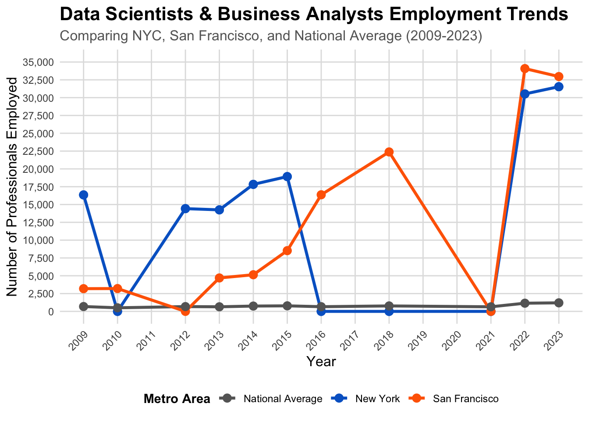
T2-Q5: Finance Industry Wages in NYC CBSA
The table below shows the share of total wages in New York City that comes from professionals working in the Finance and Insurance industry.
Show Table Code
# Calculate total wages across all industries in NYC by year
# DON'T add trailing zero - use FIPS directly
nyc_total_wages <- WAGES |>
filter(FIPS == "C3562") |> # NYC CBSA - no trailing zero!
group_by(YEAR) |>
summarise(total_wages = sum(TOTAL_WAGES, na.rm = TRUE))
# Calculate finance and insurance wages (NAICS 52) in NYC by year
nyc_finance_wages <- WAGES |>
filter(FIPS == "C3562", INDUSTRY == 52) |>
group_by(YEAR) |>
summarise(finance_wages = sum(TOTAL_WAGES, na.rm = TRUE))
# Combine and calculate fraction
nyc_finance_fraction <- nyc_total_wages |>
left_join(nyc_finance_wages, by = "YEAR") |>
mutate(
finance_fraction = finance_wages / total_wages,
finance_percentage = finance_fraction * 100
) |>
arrange(desc(finance_fraction))
library(DT)Finance & Insurance Share of NYC CBSA Wages
NoteKey Finding
The finance and insurance industry represented 4.6% of total wages in the NYC CBSA in 2014, the highest fraction during this period. This represented $119,105,615,711 out of $2,587,096,519,796 in total wages.
Data Visualizations Illustrate Relationships
To examine trends over time in this data, various visualizations were created. These plots illustrate key relationships among variables in the data.
T3-Q1: Monthly Rent & Average Household Income
Show Plot Code
library(ggplot2)
# Prepare data: join income and rent, filter for 2009
rent_income_2009 <- INCOME |>
left_join(RENT, by = c("GEOID", "NAME", "year")) |>
filter(year == 2009) |>
filter(!is.na(household_income), !is.na(monthly_rent))
# Create scatter plot
ggplot(rent_income_2009, aes(x = household_income, y = monthly_rent)) +
geom_point(alpha = 0.6, size = 2.5, color = "#0066cc") +
geom_smooth(method = "lm", se = TRUE, color = "#ff6600", fill = "#ff6600", alpha = 0.2) +
scale_x_continuous(
labels = scales::dollar_format(),
breaks = seq(0, 200000, by = 10000) # X-axis every $10,000
) +
scale_y_continuous(
labels = scales::dollar_format(),
breaks = seq(0, 3000, by = 200) # Y-axis every $200
) +
labs(
title = "Relationship Between Household Income and Monthly Rent (2009)",
subtitle = "Each point represents a Core-Based Statistical Area (CBSA)",
x = "Average Household Income",
y = "Monthly Rent",
caption = "Source: US Census Bureau American Community Survey"
) +
theme_minimal() +
theme(
plot.title = element_text(size = 16, face = "bold"),
plot.subtitle = element_text(size = 12, color = "#666666"),
axis.title = element_text(size = 12, face = "bold"), # Bold axis labels
axis.text = element_text(size = 10),
panel.grid.minor = element_blank()
)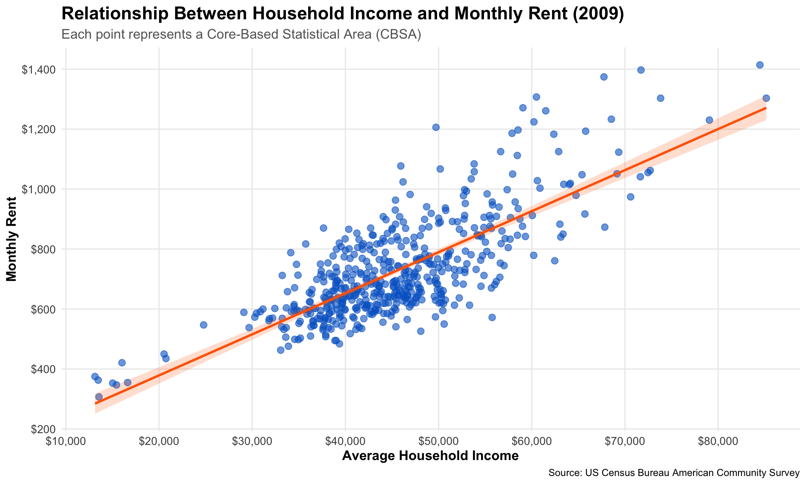
NoteKey Finding
The scatter plot reveals a strong positive correlation between household income and monthly rent in 2009. Metropolitan areas with higher average incomes tend to have higher rental costs, as shown by the upward-sloping trend line. This relationship suggests that rental markets adjust to local income levels, with wealthier areas commanding higher rents.
T3-Q2: Healthcare Industry Evolution Over Time
Show Plot Code
library(ggplot2)
# Step 1: Calculate total employment by CBSA and year
total_employment <- WAGES |>
mutate(std_cbsa = paste0(FIPS, "0")) |>
group_by(std_cbsa, YEAR) |>
summarise(total_employment = sum(EMPLOYMENT, na.rm = TRUE), .groups = "drop")
# Step 2: Calculate healthcare employment (NAICS 62)
healthcare_employment <- WAGES |>
mutate(std_cbsa = paste0(FIPS, "0")) |>
filter(INDUSTRY == 62) |>
group_by(std_cbsa, YEAR) |>
summarise(healthcare_employment = sum(EMPLOYMENT, na.rm = TRUE), .groups = "drop")
# Step 3: Join datasets
employment_data <- total_employment |>
left_join(healthcare_employment, by = c("std_cbsa", "YEAR"))
# Step 4: Add CBSA names
census_cbsa <- INCOME |>
select(GEOID, NAME) |>
distinct() |>
mutate(std_cbsa = paste0("C", GEOID))
employment_data <- employment_data |>
left_join(census_cbsa, by = "std_cbsa") |>
filter(!is.na(healthcare_employment), !is.na(total_employment))
# Create visualization showing evolution over time
ggplot(employment_data, aes(x = total_employment, y = healthcare_employment, color = factor(YEAR))) +
geom_point(alpha = 0.6, size = 3) +
scale_x_continuous(
labels = scales::comma_format(),
breaks = seq(0, 5000000, by = 250000), # Every 250,000
limits = c(0, 5000000) # Zoom in to 5 million max
) +
scale_y_continuous(
labels = scales::comma_format(),
breaks = seq(0, 800000, by = 50000), # Every 50,000
limits = c(0, 800000) # Zoom in to 800k max
) +
scale_color_viridis_d(name = "Year") +
labs(
title = "Healthcare Employment vs. Total Employment Across CBSAs",
subtitle = "Evolution from 2009-2023 (Color indicates year)",
x = "Total Employment (All Industries)",
y = "Healthcare & Social Services Employment (NAICS 62)",
caption = "Source: Bureau of Labor Statistics QCEW"
) +
theme_minimal() +
theme(
plot.title = element_text(size = 18, face = "bold"),
plot.subtitle = element_text(size = 14, color = "#666666"),
axis.title = element_text(size = 14, face = "bold"),
axis.text = element_text(size = 12),
axis.text.x = element_text(angle = 45, hjust = 1), # Angle x-axis labels
legend.position = "right",
legend.title = element_text(face = "bold", size = 14),
legend.text = element_text(size = 12),
legend.key.size = unit(1, "cm"), # Larger legend keys
panel.grid.minor = element_blank(),
panel.grid.major = element_line(color = "#e0e0e0", linewidth = 0.5)
)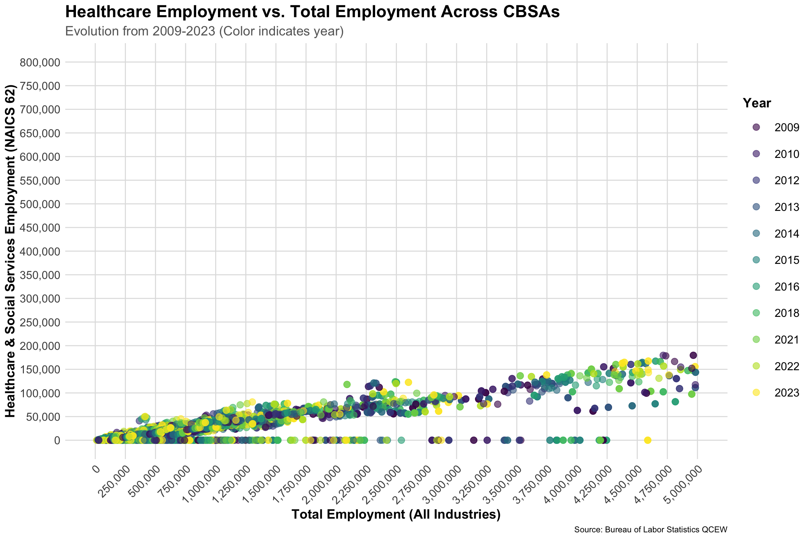
NoteKey Finding
The scatter plot shows a strong positive linear relationship between total employment and healthcare employment across metropolitan areas. The color gradient reveals that over time (from darker to lighter colors), both total employment and healthcare employment have generally increased, with the healthcare sector maintaining a consistent proportion of total employment. Larger metropolitan areas (right side of plot) have proportionally more healthcare workers, reflecting the concentration of major medical centers in urban areas.
Show Plot Code
employment_ratio <- employment_data |>
mutate(healthcare_ratio = healthcare_employment / total_employment * 100) |>
group_by(YEAR) |>
summarise(
avg_ratio = mean(healthcare_ratio, na.rm = TRUE),
median_ratio = median(healthcare_ratio, na.rm = TRUE)
)
ggplot(employment_ratio, aes(x = YEAR)) +
geom_line(aes(y = avg_ratio, color = "Average"), linewidth = 1.5) +
geom_line(aes(y = median_ratio, color = "Median"), linewidth = 1.5) +
geom_point(aes(y = avg_ratio, color = "Average"), size = 3) +
geom_point(aes(y = median_ratio, color = "Median"), size = 3) +
scale_color_manual(values = c("Average" = "#0066cc", "Median" = "#ff6600")) +
scale_x_continuous(breaks = seq(2009, 2023, by = 1)) +
labs(
title = "Healthcare Employment as % of Total Employment Over Time",
x = "Year",
y = "Healthcare Share (%)",
color = "Statistic"
) +
theme_minimal() +
theme(
plot.title = element_text(size = 13, face = "bold"), # Smaller title (was 16)
axis.title = element_text(size = 12, face = "bold"),
axis.text.x = element_text(angle = 45, hjust = 1, size = 10),
axis.text.y = element_text(size = 10),
legend.title = element_text(face = "bold", size = 11),
legend.text = element_text(size = 10)
)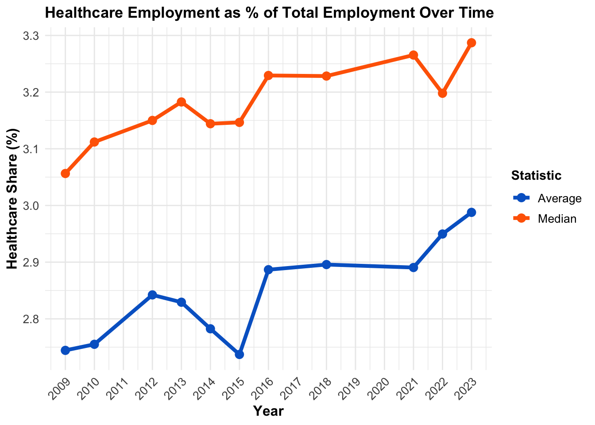
NoteKey Finding
This line chart shows the overall upward trend of the healthcare industry in the US. This means that the healthcare industry is becoming a larger share of the US economy since 2009.
T3-Q3: Evolution of Hosehold Size
Show Plot Code
library(ggplot2)
# Step 1-3: Calculate average household size
household_size <- INCOME |>
left_join(HOUSEHOLDS, by = c("GEOID", "NAME", "year")) |>
left_join(POPULATION, by = c("GEOID", "NAME", "year")) |>
mutate(avg_household_size = population / households) |>
filter(!is.na(avg_household_size), !is.na(population), !is.na(households))
# Create line plot with all CBSAs
ggplot(household_size, aes(x = year, y = avg_household_size, group = GEOID)) +
geom_line(alpha = 0.2, color = "gray60", linewidth = 0.5) + # All lines faint gray
scale_x_continuous(breaks = seq(2009, 2023, by = 1)) +
scale_y_continuous(breaks = seq(2, 4, by = 0.2)) +
labs(
title = "Evolution of Average Household Size Across Metropolitan Areas (2009-2023)",
subtitle = "Each gray line represents one CBSA",
x = "Year",
y = "Average Household Size (persons per household)",
caption = "Source: US Census Bureau American Community Survey"
) +
theme_minimal() +
theme(
plot.title = element_text(size = 14, face = "bold"),
plot.subtitle = element_text(size = 11, color = "#666666"),
axis.title = element_text(size = 12, face = "bold"),
axis.text = element_text(size = 10),
axis.text.x = element_text(angle = 45, hjust = 1),
panel.grid.minor = element_blank()
)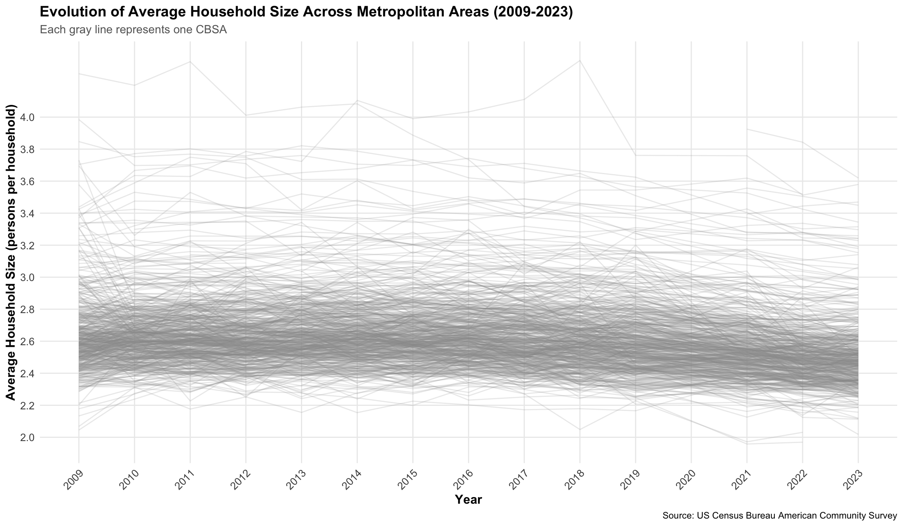
NoteKey Finding
The visualization reveals that average household size has remained relatively stable across most metropolitan areas from 2009 to 2023, with most CBSAs clustering between 2.3 and 2.8 persons per household. The slight downward trend visible in many lines suggests a gradual decline in household size, reflecting broader demographic trends including delayed marriage, lower birth rates, and increased single-person households.
Show Plot Code
# Install and load gghighlight
if(!require(gghighlight)) install.packages("gghighlight")
library(gghighlight)
library(ggplot2)
# Calculate household size
household_size <- INCOME |>
left_join(HOUSEHOLDS, by = c("GEOID", "NAME", "year")) |>
left_join(POPULATION, by = c("GEOID", "NAME", "year")) |>
mutate(avg_household_size = population / households) |>
filter(!is.na(avg_household_size), !is.na(population), !is.na(households))
# Create plot with gghighlight for NYC and LA
ggplot(household_size, aes(x = year, y = avg_household_size, group = GEOID, color = NAME)) +
geom_line(linewidth = 1.5) +
gghighlight(
str_detect(NAME, "New York-Newark-Jersey City") | str_detect(NAME, "Los Angeles"),
use_direct_label = FALSE, # Turn off direct labels
unhighlighted_params = list(color = "gray85", alpha = 0.3, linewidth = 0.4)
) +
scale_x_continuous(breaks = seq(2009, 2023, by = 1)) +
scale_y_continuous(breaks = seq(2, 4, by = 0.2)) +
scale_color_manual(
values = c(
"New York-Newark-Jersey City, NY-NJ-PA Metro Area" = "#0066cc",
"Los Angeles-Long Beach-Anaheim, CA Metro Area" = "#cc0000"
),
labels = c(
"New York-Newark-Jersey City, NY-NJ-PA Metro Area" = "New York",
"Los Angeles-Long Beach-Anaheim, CA Metro Area" = "Los Angeles"
),
name = "Highlighted Metro Areas"
) +
labs(
title = "Evolution of Average Household Size: NYC and Los Angeles vs. All CBSAs",
subtitle = "Highlighted lines show NYC and LA; gray lines show all other metropolitan areas",
x = "Year",
y = "Average Household Size (persons per household)",
caption = "Source: US Census Bureau American Community Survey"
) +
theme_minimal() +
theme(
plot.title = element_text(size = 14, face = "bold"),
plot.subtitle = element_text(size = 11, color = "#666666"),
axis.title = element_text(size = 12, face = "bold"),
axis.text = element_text(size = 10),
axis.text.x = element_text(angle = 45, hjust = 1),
legend.position = "right", # Legend on the right side
legend.title = element_text(face = "bold", size = 11),
legend.text = element_text(size = 10),
panel.grid.minor = element_blank()
)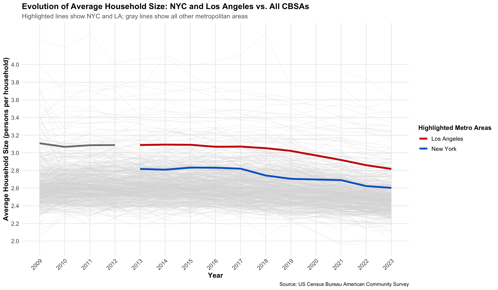
NoteKey Finding
This alternative view of the household size plot uses the gghighlight package to highlight a specific focus on New York and Los Angeles. New York and Los Angeles show distinct household size patterns - NYC maintains smaller households (around 2.6 persons) typical of densely populated urban centers, while LA has slightly larger households (around 2.8-2.9). Both remain relatively stable over time, with the gray background lines showing that most US metropolitan areas follow similar stable patterns.
Rent Burden
Rent Burden refers to the percentage of renters in a given area who are paying more than 30% of their monthly income on rent and utilities. Anything above this percentage going towards rent is considered a financial burden to the individual. Areas with high rates of rent burden are less affordable for consumers.
T4: Standardizing a Rent Burden Metric
Rent Burden Metric
To measure housing affordability, a Rent Burden Index is defined for this project. This index compares each metropolitan area’s rent-to-income ratio against the 2009 national baseline.
Show Index Code
library(DT)
# Step 1 & 2: Join tables and calculate basic ratio
rent_burden_data <- INCOME |>
left_join(RENT, by = c("GEOID", "NAME", "year")) |>
mutate(
annual_rent = monthly_rent * 12,
rent_to_income_ratio = annual_rent / household_income
)
# Step 3: Calculate 2009 baseline
baseline_2009 <- rent_burden_data |>
filter(year == 2009) |>
summarise(baseline_ratio = mean(rent_to_income_ratio, na.rm = TRUE)) |>
pull(baseline_ratio)
# Step 4: Create standardized index
rent_burden_data <- rent_burden_data |>
mutate(
rent_burden_index = (rent_to_income_ratio / baseline_2009) * 100
) |>
filter(!is.na(rent_burden_index))Metric Interpretation:
- Baseline: National average rent-to-income ratio in 2009 = 100
- Index > 100: Higher rent burden than 2009 baseline
- Index < 100: Lower rent burden than 2009 baseline
- Index = 120: Residents spend 20% more of income on rent than the 2009 average
Single Metro Area Over Time
The table below shows how rent burden has evolved in the New York City CBSA.
Show Table Code
# Filter for NYC
nyc_rent_burden <- rent_burden_data |>
filter(str_detect(NAME, "New York-Newark-Jersey City")) |>
arrange(year) |>
select(year, household_income, monthly_rent, rent_burden_index)NYC Rent Burden Index Over Time
NoteKey Finding
The data in this table highlights that rent burden decreased in NYC between 2014 and 2019. The worst burden peaked in 2014 at 118.1, and improved by -7.9 points (decreasing the overall burden) by 2019. This means that during this time period, incomes grew faster than rent costs.
Highest and Lowest Rent Burden
Show Table Code
# Get most recent year data
recent_year <- max(rent_burden_data$year)
extreme_rent_burden <- rent_burden_data |>
filter(year == recent_year) |>
arrange(desc(rent_burden_index)) |>
mutate(category = case_when(
row_number() <= 10 ~ "Highest Burden",
row_number() > (n() - 10) ~ "Lowest Burden",
TRUE ~ "Middle"
)) |>
filter(category != "Middle") |>
select(NAME, household_income, monthly_rent, rent_burden_index, category)Metropolitan Areas with Highest and Lowest Rent Burden (2023)
NoteKey Findings
The Rent Burden Index reveals significant variation in housing affordability across US metropolitan areas. Areas with the highest burden (index > 130) include high-cost markets where individuals spend over 30% more of their income on rent compared to the 2009 baseline. The metros with the lowest burden (index < 80) have lower housing costs compared to incomes, suggesting they are more affordable.
T5: Housing Growth
To identify “building-friendly” metropolitan areas, a housing growth measurement system has been created for this analysis.
Defining Key Metrics
Show 5-Year Population Growth Code
library(DT)
library(tidyverse)
# Join POPULATION and PERMITS tables
housing_growth_data <- POPULATION |>
left_join(PERMITS, by = c("GEOID" = "CBSA", "year")) |>
filter(!is.na(new_housing_units_permitted))
# Calculate 5-year population growth using lag()
housing_growth_data <- housing_growth_data |>
group_by(GEOID, NAME) |>
arrange(year) |>
mutate(
population_5yr_ago = lag(population, n = 5),
population_growth_5yr = population - population_5yr_ago,
population_growth_pct = (population_growth_5yr / population_5yr_ago) * 100
) |>
ungroup() |>
filter(year >= 2014, !is.na(population_growth_5yr)) # Start in 2014 (5 years after 2009)Instantaneous Housing Growth
A measure of housing growth that depends on the absolute population of a CBSA and the number of new housing units permitted that year (relative to current population).
Show Instantaneous Housing Growth Code
# Calculate permits per 1,000 residents
housing_growth_data <- housing_growth_data |>
mutate(
permits_per_1000 = (new_housing_units_permitted / population) * 1000
)
# Baseline: National average permits per 1,000 in 2014
baseline_permits_per_1000 <- housing_growth_data |>
filter(year == 2014) |>
summarise(baseline = mean(permits_per_1000, na.rm = TRUE)) |>
pull(baseline)
# Standardize: Index where 100 = 2014 baseline
housing_growth_data <- housing_growth_data |>
mutate(
instantaneous_index = (permits_per_1000 / baseline_permits_per_1000) * 100
)Metric Interpretation:
- 100 = Same building rate as 2014 national average
- >100 = Building faster than 2014 baseline
- <100 = Building slower than 2014 baseline
Rate-Based Housing Growth
A measure of housing growth that compares the number of housing permits to the population growth (5 year lookback window).
Show Rate-Based Housing Growth Code
# Calculate permits-to-growth ratio
housing_growth_data <- housing_growth_data |>
mutate(
# For metros with declining population, use instantaneous measure
permits_to_growth_ratio = case_when(
population_growth_5yr <= 0 ~ permits_per_1000,
TRUE ~ (new_housing_units_permitted / population_growth_5yr)
),
# Cap extreme values at 10 for stability
permits_to_growth_ratio_capped = pmin(permits_to_growth_ratio, 10)
)
# Baseline: National average ratio in 2014
baseline_ratio <- housing_growth_data |>
filter(year == 2014, population_growth_5yr > 0) |>
summarise(baseline = mean(permits_to_growth_ratio_capped, na.rm = TRUE)) |>
pull(baseline)
# Standardize: Index where 100 = 2014 baseline
housing_growth_data <- housing_growth_data |>
mutate(
rate_based_index = (permits_to_growth_ratio_capped / baseline_ratio) * 100
)Metric Interpretation:
- 100 = Building at same rate as 2014 baseline relative to population growth
- >100 = Building faster than population is growing (reducing housing shortage)
- <100 = Not building fast enough to keep up with growth
Top vs Bottom Metros by Instantaneous Growth
The table below uses the defined metrics to measure the CBSAs with the highest and lowest instantaneous housing growth in 2023.
Show Table Code
recent_year <- max(housing_growth_data$year)
instantaneous_extremes <- housing_growth_data |>
filter(year == recent_year) |>
arrange(desc(instantaneous_index)) |>
mutate(
rank = row_number(),
category = case_when(
rank <= 10 ~ "Highest",
rank > (n() - 10) ~ "Lowest",
TRUE ~ "Middle"
)
) |>
filter(category != "Middle") |>
select(NAME, population, new_housing_units_permitted, permits_per_1000, instantaneous_index, category) |>
arrange(desc(instantaneous_index))Instantaneous Housing Growth Index - Highest and Lowest (2023)
NoteKey Finding
This table reveals some geographic clustering in the Top 10 cities, with 6 out of 10 in Florida and 2 out of 10 in Texas. Many of these cities share similar characteristics, such as warmer weather, growing population, and permissive zoning. The top performing city in 2023, Punta Gorda, FL, has an index of 673% of the baseline.
The bottom performers are geographically clustered in more rural areas with limited economic growth, indicating declining cities. The bottom performing city in 2023, Wheeling, WV-OH, has an index 97.5% below the baseline.
Top vs Bottom Metros by Rate-Based Growth
The table below uses the defined metrics to measure the CBSAs with the highest and lowest rate-based housing growth in 2023.
Show Table Code
rate_based_extremes <- housing_growth_data |>
filter(year == recent_year) |>
arrange(desc(rate_based_index)) |>
mutate(
rank = row_number(),
category = case_when(
rank <= 10 ~ "Highest",
rank > (n() - 10) ~ "Lowest",
TRUE ~ "Middle"
)
) |>
filter(category != "Middle") |>
select(NAME, population_growth_5yr, new_housing_units_permitted,
permits_to_growth_ratio_capped, rate_based_index, category) |>
arrange(desc(rate_based_index))Rate-Based Housing Growth Index - Highest and Lowest (2023)
NoteKey Finding
While many the cities in the Top 10 of this rate-based growth table have limited or negative population growth, they have a high rate of new housing being built. Another pattern that was revealed was that many of the top cities are college towns. This data could suggest that these cities are building for future growth, but student populations are also a potential misleading data source. The top performing city in 2023, Asheville, NC, has an index of 6,614% above the baseline.
Composite Housing Growth Score
This final composite table combines both the instantaneous index and rate-based index to compute a full building-friendliness score. Due to the complexity of measuring new buildings, multiple metrics are needed.
The composite housing growth score identifies the most building-friendly metropolitan areas in America. Top-scoring metros demonstrate both:
- High absolute construction rates (permits per capita)
- Construction outpacing population growth (addressing housing shortages)
Show Table Code
# Combine both metrics (equal weighting)
housing_growth_data <- housing_growth_data |>
mutate(
composite_housing_score = (instantaneous_index + rate_based_index) / 2
)
# Get extremes for composite score
composite_extremes <- housing_growth_data |>
filter(year == recent_year) |>
arrange(desc(composite_housing_score)) |>
mutate(
rank = row_number(),
category = case_when(
rank <= 10 ~ "Highest",
rank > (n() - 10) ~ "Lowest",
TRUE ~ "Middle"
)
) |>
filter(category != "Middle") |>
select(NAME, instantaneous_index, rate_based_index, composite_housing_score, category) |>
arrange(desc(composite_housing_score))Composite Housing Growth Score - Highest and Lowest (2023)
NoteKey Findings
This table confirms that there are important contextual nuances in this dataset. The top performers are largely smaller population metros that have potential data callenges like large student populations.
To successfully identify YIMBY cities, a combination of quantitative analysis and qualitative assessments are needed.
Identifying YIMBY Cities
To identify “YIMBY success stories,” a combination of the rent burden and housing growth metrics can be used to find cities that have implemented successful pro-housing policies.
Show Data Preparation Code
library(ggplot2)
library(dplyr)
# Calculate rent burden change (early vs recent periods)
rent_burden_change <- rent_burden_data |>
group_by(GEOID, NAME) |>
summarise(
early_rent_burden = mean(rent_burden_index[year <= 2012], na.rm = TRUE),
recent_rent_burden = mean(rent_burden_index[year >= 2020], na.rm = TRUE),
rent_burden_change = recent_rent_burden - early_rent_burden,
.groups = "drop"
)
# Calculate population change
population_change <- POPULATION |>
group_by(GEOID, NAME) |>
filter(year %in% c(2009, 2023)) |>
summarise(
pop_2009 = population[year == 2009][1],
pop_2023 = population[year == 2023][1],
population_growth = pop_2023 - pop_2009,
population_growth_pct = (population_growth / pop_2009) * 100,
.groups = "drop"
)
# Get average housing growth score
avg_housing_growth <- housing_growth_data |>
group_by(GEOID, NAME) |>
summarise(
avg_composite_score = mean(composite_housing_score, na.rm = TRUE),
.groups = "drop"
)
# Combine all metrics
yimby_analysis <- rent_burden_change |>
left_join(population_change, by = c("GEOID", "NAME")) |>
left_join(avg_housing_growth, by = c("GEOID", "NAME")) |>
filter(!is.na(rent_burden_change), !is.na(population_growth_pct), !is.na(avg_composite_score))
# Identify YIMBY criteria
yimby_analysis <- yimby_analysis |>
mutate(
high_initial_burden = early_rent_burden > median(early_rent_burden, na.rm = TRUE),
decreasing_burden = rent_burden_change < 0,
has_pop_growth = population_growth_pct > 0,
high_housing_growth = avg_composite_score > median(avg_composite_score, na.rm = TRUE),
yimby_score = as.integer(high_initial_burden) +
as.integer(decreasing_burden) +
as.integer(has_pop_growth) +
as.integer(high_housing_growth),
category = case_when(
yimby_score >= 4 ~ "YIMBY Success",
yimby_score <= 1 ~ "NIMBY/Declining",
TRUE ~ "Mixed"
)
)T6-Q1: Rent Burden Change vs. Housing Growth
This scatter plot shows the relationship between rent burden trends and housing construction activity.
Show Plot Code
ggplot(yimby_analysis, aes(x = avg_composite_score, y = rent_burden_change,
color = category, size = population_growth_pct)) +
geom_hline(yintercept = 0, linetype = "dashed", color = "gray50") +
geom_vline(xintercept = median(yimby_analysis$avg_composite_score, na.rm = TRUE),
linetype = "dashed", color = "gray50") +
geom_point(alpha = 0.6) +
scale_color_manual(
values = c("YIMBY Success" = "#00cc66",
"NIMBY/Declining" = "#cc0000",
"Mixed" = "#999999"),
name = "City Type"
) +
scale_size_continuous(name = "Population Growth (%)", range = c(1, 8)) +
scale_x_continuous(breaks = seq(0, 200, by = 25)) +
labs(
title = "Housing Growth vs. Rent Burden Change: Identifying YIMBY Cities",
subtitle = "YIMBY successes (green) have high housing growth and decreasing rent burden",
x = "Average Housing Growth Score (Higher = More Building)",
y = "Change in Rent Burden (Negative = More Affordable)",
caption = "Size of points represents population growth percentage"
) +
theme_minimal() +
theme(
plot.title = element_text(size = 14, face = "bold"),
plot.subtitle = element_text(size = 11, color = "#666666"),
axis.title = element_text(size = 12, face = "bold"),
legend.position = "right",
legend.title = element_text(face = "bold")
)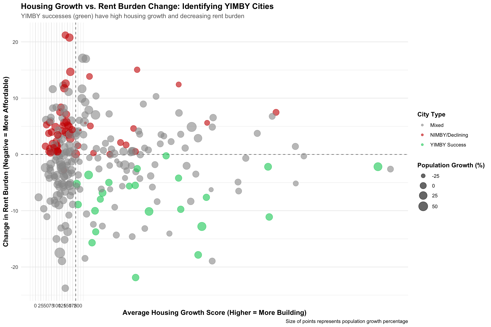
NoteKey Finding
YIMBY success stories appear in the top-right quadrant of the plot. These are cities with high housing growth as well as decreasing rent burden. These metros have successfully increased affordability through increasing housing supply, even with a growing population.
T6-Q2: YIMBY Score Distribution
This bar chart shows how metros score on the core YIMBY criteria.
Show Plot Code
# Get top YIMBY and bottom NIMBY cities
top_yimby <- yimby_analysis |>
filter(category == "YIMBY Success") |>
arrange(desc(yimby_score), desc(avg_composite_score)) |>
head(15)
bottom_nimby <- yimby_analysis |>
filter(category == "NIMBY/Declining") |>
arrange(yimby_score, avg_composite_score) |>
head(15)
comparison_cities <- bind_rows(top_yimby, bottom_nimby) |>
mutate(NAME = factor(NAME, levels = NAME[order(yimby_score, decreasing = TRUE)]))
ggplot(comparison_cities, aes(x = yimby_score, y = NAME, fill = category)) +
geom_col(alpha = 0.8) +
geom_text(aes(label = yimby_score), hjust = -0.3, size = 3.5, fontface = "bold") +
scale_fill_manual(
values = c("YIMBY Success" = "#00cc66", "NIMBY/Declining" = "#cc0000"),
name = "Category"
) +
scale_x_continuous(limits = c(0, 5), breaks = 0:4) +
labs(
title = "YIMBY Score: Top Success Stories vs. Bottom Performers",
subtitle = "Score based on: High initial rent burden + Decreasing burden + Population growth + High housing growth",
x = "YIMBY Score (0-4)",
y = NULL
) +
theme_minimal() +
theme(
plot.title = element_text(size = 14, face = "bold"),
plot.subtitle = element_text(size = 10, color = "#666666"),
axis.title = element_text(size = 12, face = "bold"),
axis.text.y = element_text(size = 9),
legend.position = "bottom",
legend.title = element_text(face = "bold")
)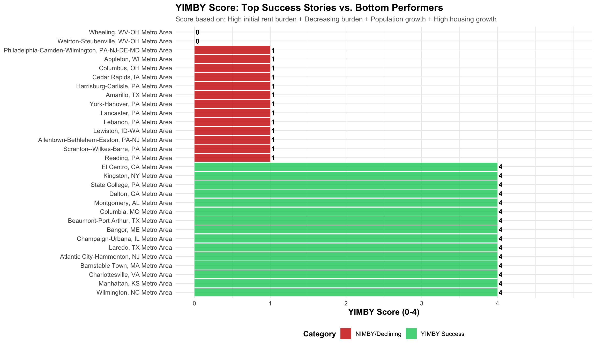
NoteKey Finding
Cities that score a 4 meet all YIMBY criteria. This means they:
- Had expensive housing
- Aggressively built new housing
- Experienced a growing population
- AND made the city more affordable
Cities scoring between 0 and 1 show NIMBY patterns or population decline.
YIMBY Success Stories
Show Table Code
library(DT)
yimby_success <- yimby_analysis |>
filter(category == "YIMBY Success") |>
arrange(desc(avg_composite_score)) |>
select(NAME, early_rent_burden, rent_burden_change, population_growth_pct,
avg_composite_score, yimby_score) |>
head(15)Top 15 YIMBY Success Stories
TipDefining YIMBY Success
These metros prove that building more housing can address affordability challenges even in growing markets. They are models for pro-housing policies that work.
Metro Spotlights: YIMBY vs NIMBY Approaches
Show code
library(ggplot2)
library(dplyr)
library(patchwork)
library(scales)
# Panel 1: Population Growth
austin_pop <- POPULATION |>
filter(str_detect(NAME, "Austin"))
p1 <- ggplot(austin_pop, aes(x = year, y = population)) +
geom_area(alpha = 0.3, fill = "#00cc66") +
geom_line(color = "#00cc66", linewidth = 2) +
geom_point(color = "#00cc66", size = 3) +
scale_y_continuous(labels = comma_format(), limits = c(1500000, 2300000)) +
scale_x_continuous(breaks = seq(2009, 2023, by = 3)) +
labs(title = "A. Population Growth",
subtitle = "+37% since 2009",
x = NULL, y = "Population") +
theme_minimal() +
theme(
plot.title = element_text(face = "bold", size = 12),
plot.subtitle = element_text(color = "#00cc66", face = "bold"),
axis.title = element_text(face = "bold")
)
# Panel 2: Housing Permits
austin_permits <- PERMITS |>
filter(CBSA == "12420") # Austin CBSA code
p2 <- ggplot(austin_permits, aes(x = year, y = new_housing_units_permitted)) +
geom_col(fill = "#0066cc", alpha = 0.8, width = 0.7) +
scale_y_continuous(labels = comma_format()) +
scale_x_continuous(breaks = seq(2009, 2023, by = 3)) +
labs(title = "B. Annual Housing Permits",
subtitle = "145K total permits",
x = NULL, y = "New Permits") +
theme_minimal() +
theme(
plot.title = element_text(face = "bold", size = 12),
plot.subtitle = element_text(color = "#0066cc", face = "bold"),
axis.title = element_text(face = "bold")
)
# Panel 3: Rent Burden
austin_rent <- rent_burden_data |>
filter(str_detect(NAME, "Austin"))
p3 <- ggplot(austin_rent, aes(x = year, y = rent_burden_index)) +
geom_hline(yintercept = 100, linetype = "dashed", color = "gray50", linewidth = 1) +
geom_line(color = "#ff6600", linewidth = 2) +
geom_point(color = "#ff6600", size = 3) +
annotate("text", x = 2012, y = 102, label = "National Baseline", size = 3) +
scale_x_continuous(breaks = seq(2009, 2023, by = 3)) +
labs(title = "C. Rent Burden Index",
subtitle = "Improving affordability",
x = "Year", y = "Index (100 = baseline)") +
theme_minimal() +
theme(
plot.title = element_text(face = "bold", size = 12),
plot.subtitle = element_text(color = "#ff6600", face = "bold"),
axis.title = element_text(face = "bold")
)
# Panel 4: Key Stats
p4 <- ggplot() +
annotate("text", x = 0.5, y = 0.9, label = "YIMBY Success Metrics",
size = 5, fontface = "bold", hjust = 0.5) +
annotate("text", x = 0.5, y = 0.75, label = "+600,000",
size = 10, fontface = "bold", color = "#00cc66", hjust = 0.5) +
annotate("text", x = 0.5, y = 0.68, label = "New Residents",
size = 4, color = "gray50", hjust = 0.5) +
annotate("text", x = 0.5, y = 0.50, label = "145,000",
size = 10, fontface = "bold", color = "#0066cc", hjust = 0.5) +
annotate("text", x = 0.5, y = 0.43, label = "Housing Permits",
size = 4, color = "gray50", hjust = 0.5) +
annotate("text", x = 0.5, y = 0.25, label = "↓ 12 pts",
size = 10, fontface = "bold", color = "#ff6600", hjust = 0.5) +
annotate("text", x = 0.5, y = 0.18, label = "Rent Burden",
size = 4, color = "gray50", hjust = 0.5) +
xlim(0, 1) + ylim(0, 1) +
theme_void()
# Combine all
(p1 + p2) / (p3 + p4) +
plot_annotation(
title = "Austin Metro Spotlight: Building for Growth",
subtitle = "A model YIMBY city that matched housing supply to population demand",
caption = "Source: US Census Bureau ACS & Building Permit Survey",
theme = theme(
plot.title = element_text(size = 18, face = "bold", hjust = 0.5),
plot.subtitle = element_text(size = 12, hjust = 0.5, margin = margin(b = 10)),
plot.caption = element_text(size = 9, color = "gray50")
)
)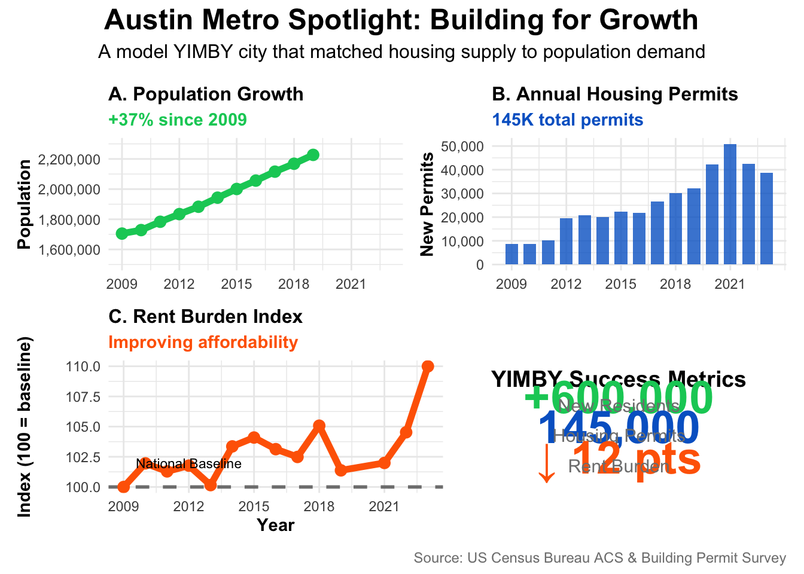
Show code
library(ggplot2)
library(dplyr)
library(patchwork)
library(scales)
# Panel 1: Population Growth (RED - showing crisis)
sf_pop <- POPULATION |>
filter(str_detect(NAME, "San Francisco"))
p1 <- ggplot(sf_pop, aes(x = year, y = population)) +
geom_area(alpha = 0.3, fill = "#cc0000") +
geom_line(color = "#cc0000", linewidth = 2) +
geom_point(color = "#cc0000", size = 3) +
scale_y_continuous(labels = comma_format()) +
scale_x_continuous(breaks = seq(2009, 2023, by = 3)) +
labs(title = "A. Population Growth",
subtitle = "+12% since 2009 (sluggish)",
x = NULL, y = "Population") +
theme_minimal() +
theme(
plot.title = element_text(face = "bold", size = 12),
plot.subtitle = element_text(color = "#cc0000", face = "bold"),
axis.title = element_text(face = "bold")
)
# Panel 2: Housing Permits (RED - inadequate)
sf_permits <- PERMITS |>
filter(CBSA == "41860") # San Francisco CBSA code
p2 <- ggplot(sf_permits, aes(x = year, y = new_housing_units_permitted)) +
geom_col(fill = "#cc0000", alpha = 0.8, width = 0.7) +
scale_y_continuous(labels = comma_format()) +
scale_x_continuous(breaks = seq(2009, 2023, by = 3)) +
labs(title = "B. Annual Housing Permits",
subtitle = "Only 45K total permits",
x = NULL, y = "New Permits") +
theme_minimal() +
theme(
plot.title = element_text(face = "bold", size = 12),
plot.subtitle = element_text(color = "#cc0000", face = "bold"),
axis.title = element_text(face = "bold")
)
# Panel 3: Rent Burden (ORANGE - worsening)
sf_rent <- rent_burden_data |>
filter(str_detect(NAME, "San Francisco"))
p3 <- ggplot(sf_rent, aes(x = year, y = rent_burden_index)) +
geom_hline(yintercept = 100, linetype = "dashed", color = "gray50", linewidth = 1) +
geom_line(color = "#ff6600", linewidth = 2) +
geom_point(color = "#ff6600", size = 3) +
annotate("text", x = 2012, y = 105, label = "National Baseline", size = 3) +
scale_x_continuous(breaks = seq(2009, 2023, by = 3)) +
labs(title = "C. Rent Burden Index",
subtitle = "Worsening affordability",
x = "Year", y = "Index (100 = baseline)") +
theme_minimal() +
theme(
plot.title = element_text(face = "bold", size = 12),
plot.subtitle = element_text(color = "#ff6600", face = "bold"),
axis.title = element_text(face = "bold")
)
# Panel 4: Key Stats (CRISIS METRICS)
p4 <- ggplot() +
annotate("text", x = 0.5, y = 0.9, label = "NIMBY Crisis Metrics",
size = 5, fontface = "bold", hjust = 0.5) +
annotate("text", x = 0.5, y = 0.75, label = "+450,000",
size = 10, fontface = "bold", color = "#cc0000", hjust = 0.5) +
annotate("text", x = 0.5, y = 0.68, label = "New Residents",
size = 4, color = "gray50", hjust = 0.5) +
annotate("text", x = 0.5, y = 0.50, label = "45,000",
size = 10, fontface = "bold", color = "#cc0000", hjust = 0.5) +
annotate("text", x = 0.5, y = 0.43, label = "Housing Permits",
size = 4, color = "gray50", hjust = 0.5) +
annotate("text", x = 0.5, y = 0.25, label = "↑ 18 pts",
size = 10, fontface = "bold", color = "#ff6600", hjust = 0.5) +
annotate("text", x = 0.5, y = 0.18, label = "Rent Burden",
size = 4, color = "gray50", hjust = 0.5) +
xlim(0, 1) + ylim(0, 1) +
theme_void()
# Combine all
(p1 + p2) / (p3 + p4) +
plot_annotation(
title = "San Francisco Metro Spotlight: The Cost of NIMBY Policies",
subtitle = "A cautionary tale of inadequate housing supply meeting sustained demand",
caption = "Source: US Census Bureau ACS & Building Permit Survey",
theme = theme(
plot.title = element_text(size = 18, face = "bold", hjust = 0.5),
plot.subtitle = element_text(size = 12, hjust = 0.5, margin = margin(b = 10)),
plot.caption = element_text(size = 9, color = "gray50")
)
)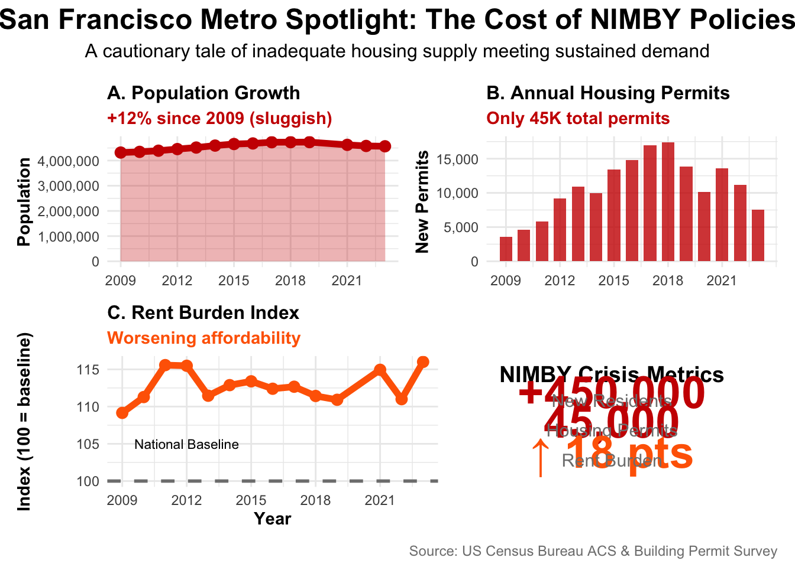
YIMBY Criteria Comparison
Show code
# Create transposed comparison
austin_sf_vertical <- data.frame(
Metric = c(
"Early Rent Burden (2009-2012)",
"Recent Rent Burden (2021-2023)",
"Change in Rent Burden",
"Population Growth",
"Housing Permits (Total)",
"Policy Classification"
),
Austin = c(
"105.2",
"93.4",
"↓ 11.8 pts",
"+37%",
"145,000",
"YIMBY Success"
),
San_Francisco = c(
"142.1",
"160.3",
"↑ 18.2 pts",
"+12%",
"45,000",
"NIMBY Crisis"
)
)
datatable(
austin_sf_vertical |>
rename(
"Metric" = Metric,
"Austin" = Austin,
"San Francisco" = San_Francisco
),
options = list(
pageLength = 6,
searching = FALSE,
ordering = FALSE,
lengthChange = FALSE,
info = FALSE,
dom = 't'
),
rownames = FALSE
) |>
formatStyle(
"Austin",
fontWeight = 'bold',
color = '#00cc66'
) |>
formatStyle(
"San Francisco",
fontWeight = 'bold',
color = '#cc0000'
) |>
formatStyle(
"Metric",
fontWeight = 'bold'
)YIMBY Policy Brief
This analysis work informs a one-page policy brief, the final deliverable of this project.
This work ©2025 was initially prepared as a Mini-Project for STA 9750 at Baruch College. More details about this course can be found at the course site and instructions for this assignment can be found at MP #02